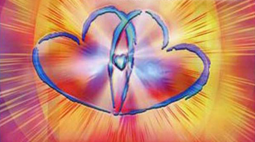

| Napis na pudełku |
|
Dokonaj
wewnętrznej przemiany i stwórz nową przyszłość! ‘Satori’ Gra RADYKALNEGO Wybaczania™ Autorzy: Colin i Joanna Tipping
|
| Twórca
gry:
Colin Tipping jest nagradzanym autorem prac z
dziedziny terapii,
znanym w Polsce dzięki książce „Radykalne Wybaczanie", a
także, wraz z
żoną Joanną Tipping, współzałożycielem Instytutu Terapii i
Nauczania
Radykalnego Wybaczania (Institute for Radical Forgiveness Therapy and
Coaching, Inc.).
Gra Radykalnego Wybaczania
‘Satori’ została wymyślona przez
Colina Tippinga, następnie zaś zaprojektowana przez niego wraz z żoną.
Pomagali im w tym konsultanci specjalizujący się w grach, Debbie
Unterman i Deanna Horscht, projektant graficzny z firmy Online
Creative, Deborah Hill, oraz researcher, Diana Urbas.
Copyright © 2004, Colin Tipping
Copyright © for the Polish edition by
Jacek Zimnicki, 2006
Wydawca: YAZI Projects
Przekład: Mariola i Jacek Zimniccy
Kontakt: gra-satori@tlen.pl, tel. 042 7177683
©2004 Colin Tipping
© for the Polish edition by Jacek
Zimnicki, 2006
Wydanie polskie: YAZI Projects
|

Przewodnik po grze (folder składany) |
| Zagraj
w ‘Satori’ doświadcz w formie zabawy RADYKALNEGO Wybaczania  Przewodnik po grze Zanim rozpoczniesz grę, Mistrz Gry odtworzy pierwsze nagranie z płyty CD. Zinterpretuj na nowo swoją przeszłość Dokonaj wewnętrznej przemiany Stwórz nową przyszłość www.gra-satori.pl Gra dla 2-5 osób od lat 14 Czas gry 120 minut Zasady gry Krok 1: Wszyscy
gracze słuchają pierwszego nagrania z
dołączonej do gry
płyty CD.
Krok 2: Każdy z
graczy rzuca kostką jeden raz. Osoba,
która
wyrzuci największą liczbę oczek, rozpoczyna grę. W przypadku remisu
gracze rzucają kostką ponownie, do momentu gdy kolejność zostanie
ustalona. Gra rozpoczyna się w tej kolejności od pola „KRAINA
OFIAR”. Ruch na planszy odbywa się zgodnie z ruchem
wskazówek zegara.
Krok 3: Każdy z
graczy wyciąga losowo po jednej karcie
„Zdarzenie” oraz „Kontekst”. Gracze po kolei
mówią, jakie karty wyciągnęli, co mogą one oznaczać i o jaką
„opowieść” z ich życia chodzi. Gracze mogą sobie w tym
pomagać. Nie przejmuj się, jeśli nie od razu wiesz, jakie sprawy wiążą
się z wylosowanymi kartami. Wyjaśni się to w trakcie gry.
Plansza Plansza ma formę
spirali. Wgrze chodzi o to, aby przejść od
„Krainy ofiar” do pola ‘Satori’. Można
tego dokonać dopiero po
pozbyciu się wszystkich kart typu „Blokady Energii”
i „Przekonanie” (zob. Uwaga). Na planszy znajdują
się 4 kręgi. Reprezentują one kolejne poziomy świadomości,
odpowiadające obszarom duchowej rzeczywistości. Zmierzając przez owe
poziomy do pełnej świadomości - czyli SATORI - doświadczamy Radykalnego
Wybaczania, przekształcając naszą „opowieść ofiary” (i nasz
ból) w spokojną akceptację.
Poziom 1: ŚWIADOMOŚĆ OFIARY:
kolor niebieski. Jest to
najniższy poziom
świadomości, na którym obwiniamy innych, przypisujemy im
nasze „ciemne strony”, atakujemy lub bronimy się, blokujemy
istniejące w nas dobro i odmawiamy przyjęcia odpowiedzialności za
własne życie - wolimy bowiem za nasze niepowodzenia obwiniać innych.
Poziom 2: POCZĄTEK PRZEBUDZENIA:
kolor zielony. Na tym
poziomie
świadomość zaczyna się budzić. Zauważamy, że nie wszystko jest takie,
jak nam się wydaje. Doświadczamy zjawiska synchroniczności
stanów psychicznych i zdarzeń, zaczynamy coraz więcej
rozumieć oraz uwalniamy niektóre urazy.
Poziom 3: PRZEMIANA ENERGII:
kolor brzoskwiniowy. Tutaj
zaczynamy
uwalniać energię, która była zaangażowana w
„opowieść ofiary”. Gdy uwalniamy ją na głębszym poziomie,
zaczynamy uświadamiać sobie, iż jesteśmy w stanie sami tworzyć
doświadczenia służące naszemu zdrowiu i rozwojowi oraz osiągamy nowe
poziomy zrozumienia.
Poziom 4: PODDANIE SIĘ BOSKIEMU
PLANOWI: kolor fioletowy.
Na tym
poziomie zaczynamy dostrzegać, jak wszystko ulega zmianie w wyniku
otwarcia się na potencjalną możliwość, że to, co nam się przydarza,
służy naszemu rozwojowi duchowemu oraz pogłębieniu naszej wiedzy.
Zbliżamy się do zinterpretowania naszej „opowieści
ofiary” na nowo i na samym końcu gry doświadczamy SATORI
(nowa perspektywa i przebudzenie).
|
| |
(czas czytania tej sekcji: około 09min51sek)....
(czas czytania całości tej strony www: około 01godz32min21sek) Opisy gry planszowej z różnych stron internetowych: Gra radykalnego wybaczania Satori to gra planszowa, która ma na celu pomóc graczom w procesie wybaczania i uzdrawiania emocjonalnego. Gra została stworzona przez Colina Tippinga, autora książki "Radykalne Wybaczanie". Gra składa się z planszy, kart z pytaniami i zadaniami oraz instrukcji. Gracze poruszają się po planszy, odpowiadając na pytania i wykonując zadania, które mają na celu pomóc im w procesie wybaczania. Gra jest zaprojektowana tak, aby pomóc graczom w zrozumieniu swoich emocji, uczuć i myśli związanych z daną sytuacją, a także w znalezieniu sposobów na wybaczenie i uzdrowienie. Gra radykalnego wybaczania Satori jest często używana w terapii i rozwoju osobistym, aby pomóc ludziom w radzeniu sobie z trudnymi emocjami i sytuacjami. -------- Masz MOC, aby zmienić sposób reakcji na sytuacje, które będą się powtarzać tak długo w Twoim życiu- dopóki nie zostaną przez Ciebie zauważone, zrozumiane, zaakceptowane i uwolnione z miłością Dlaczego GRA SATORI ? Celem GRY jest uświadomienie sobie funkcjonujących w naszym życiu ograniczających przekonań, powtarzających się wzorców oraz zablokowanych emocji. Gra w fenomenalny sposób potrafi uruchomić uzdrawiające procesy, a dzięki ich zrozumieniu jesteśmy w stanie uwolnić lęk i dokonać wewnętrznej przemiany i spojrzeć na swoją sytuację życiową z nowej perspektywy. -------- Niezwykła moc Radykalnego Wybaczania (wybaczanie pomimo wszystko) może być doświadczana na wiele sposobów, jednak gra ’Satori’ jest na pewno jedną z wyjątkowych propozycji doświadczenia tego procesu. Forma gry planszowej pomimo swojej prostoty potrafi dotrzeć do miejsc w nas, które potrzebują przemiany. Proces, w zależności od uczestników może być wesołą przygodą, wrażliwym i empatycznym doświadczeniem, pełną niespodzianek historią ludzkich doświadczeń. Niezależnie jak popłynie energia w grupie, korzyści płynące z radykalnego wybaczania obejmują wszystkich. Dokonując wewnętrznej przemiany stwarzamy NOWĄ PRZYSZŁOŚĆ. Gra Radykalnego Wybaczania ’Satori’ została wymyślona przez Colina Tippinga, następnie zaś zaprojektowana wspólnie z żoną Joanną Tipping. Koncepcja wybaczania Tippinga umożliwia nam bezpieczny powrót do zdarzeń i osób, które w naszym odczuciu nas skrzywdziły. Dzięki duchowej perspektywie możemy zmienić sposób postrzegania przeszłych zdarzeń i uwolnić się od przymusu potępiania i zemsty. Przy pomocy narzędzi metody Tippinga ”uwalniamy” energię, którą inwestowaliśmy zwykle w pielęgnowanie gniewu, krzywdy i budowanie historii ofiary. Do tego ”uwolnienia” wystarczy tylko nasza Gotowość, do przyjrzenia się naszemu życiu z duchowej perspektywy. Siadając do gry możesz mieć własną intencję (np. poprawa relacji, obfitość finansowa, nowa praca, spełnienie innego pragnienia). Proces poprowadzi cię bliżej jej spełnienia. Dzieje się tak dlatego, że doświadczenie radykalnego wybaczenia uwalnia nie tylko emocje związane z przykrym doświadczeniem, ale również powstałe z daną sytuacją, blokujące przekonania. Możesz też dołączyć do gry z otwartością i wiarą, że wszechświat wie, czego ci potrzeba. Proces poprowadzi cię do uwolnienia właśnie tych doświadczeń, na które masz gotowość. Często okazuje się, że właśnie tego potrzebowałeś. Od strony technicznej nie ma żadnych wymagań ani przygotowań. Pracujemy w max 5 osobowej grupie. Czas trwania jednej gry wynosi od 2 nawet do 5 godzin. Kończymy wszyscy jednocześnie. Na czas pracy stajemy się dla siebie grupą wspierającą proces radykalnego wybaczania. Jesteśmy naturalnie empatyczni, dodający otuchy i pomocni dla współuczestników. Wszystko, co dzieje się podczas sesji pozostaje na zawsze objęte zasadą poufności. Gdy wybaczymy radykalnie to: - uwalniamy z ciała trudne emocje związane z poczuciem krzywdy, zyskujemy lekkość - pozbywamy się części fałszywych przekonań, które nas blokowały - otwieramy bramy wolności emocjonalnej dla siebie i tych, których winiliśmy - dajemy samym sobie akceptację i zgodę na siebie - takimi jakimi jesteśmy - pojawiają się w życiu nowe okoliczności, bo z radością idziemy w życie z Nową Opowieścią -------------- Przedstawiamy najbardziej praktyczne i niezwykłe narzędzie Radykalnego Wybaczania - Grę Satori. Jest to gra planszowa, w której każdy uczestnik pracuje na wybranym trudnym wydarzeniu z przeszłości, starając się zmienić sposób w jaki go postrzega. Jak to działa? Nie musisz znać zasad i reguł gry. Nie wymagana jest także żadna wiedza związana z Radykalnym Wybaczaniem. Nie musisz być Trenerem RW, aby wziąć udział w spotkaniu. UWAGA: dla wielu osób był to pierwszy krok na drodze poznania Metody Tippinga! Jest to nieinwazyjny i pozbawiony stresu sposób, aby doświadczyć sesji Radykalnego Wybaczania. Jest to również świetna zabawa, której celem jest poszukiwanie swojego wewnętrznego spokoju i mądrości. Dzięki temu uczestnik doświadcza cudownych efektów po zakończonej rozgrywce. ---------- Gra SATORI GRA PLANSZOWA, KTÓRA NIE JEST ZABAWĄ. Jest to narzędzie w procesie metody Tippinga - Radyklane Wybaczanie. Jest to narzędzie do radykalnej zmiany perspektywy. Zmiany, która prowadzi do zrozumienia dlaczego przydarzają nam się trudne sytuacje i jak zmienić przepływ, by życie było spokojne i lekkie. Jest to sposób na odkrycie głębokich przekonań, które nie pozwalają uwolnić się od przeszłości, które są przeszkodą w podświadomości do dobrych relacji, finansów, poczucia sensu życia. ----------- Radykalne wybaczenie w formie gry czemu nie? Podczas gdy tradycyjne wybaczanie opiera się na przywiązaniu do koncepcji występowania ofiary i sprawcy, Radykalne Wybaczanie uznaje, że życiowe sytuacje zdarzają się nie nam ale DLA nas. Nie musimy przy tym rozumieć ”dlaczego" ani ”jak" to się dzieje. Gdy osiągamy gotowość przyjęcia możliwości, że wszystkie wydarzenia i sytuacje mają swój sens oraz są wyrazem Boskiego porządku, zostajemy uwolnieni od naszego bólu. Wystarczy do tego samo otwarcie się na taką ewentualność. Kiedy to czynimy, zdarzają się cuda i stajemy się wolni. ---------- Dlaczego gra planszowa? Przede wszystkim dwa słowa: energia grupy. To, z kim gramy, nigdy nie jest przypadkowe. Współuczestnicy będą Twoim lustrem, pokażą Ci Twój cień, ujawnią Twoje projekcje, nierzadko także striggerują Cię, ale będą także wspierać, dopingować, współodczuwać, niektórzy Twój proces przejdą razem z Tobą, bo niosą w życiu podobny bagaż. Zaczynacie jako nieznajomi, kończycie jako zgrana grupa połączona energią Radykalnego Wybaczania. W ramach gry Satori gracze przechodzą wspólnie wszystkie 5 etapów Radykalnego Wybaczania, zaczynając oczywiście w Krainie Ofiar. Wielu cofnie się, by przepracować coś dogłębniej, wielu zmierzy się ze swoimi 'brakami' lub lękami, niektórzy po raz pierwszy powiedzą coś na głos, ale na końcu wszystkich czeka piękne zjednoczenie w miłości i doskonałości. (Brzmi bajkowo, wiem, ale zgodzi się ze mną każdy, kto przeszedł ten piękny proces.) To również powody, dla których warto grę Satori przejść pod okiem doświadczonego Trenera Radykalnego Wybaczania, który jako 'mistrz gry', osoba prowadząca, pomoże przejść przez wszystkie procesy i wyciągnąć z całego spotkania jak najwięcej dla wszystkich uczestników. --------------- Warsztaty skierowane są przede wszystkim do osób: które już zbyt długo tkwią w przeszłości, rozdrapują stare rany, czują się skrzywdzone i cierpią w ”krainie ofiar”, bo myślą, że w taki sposób ukarzą drugą osobę, a tymczasem same codziennie sączą truciznę z nadzieją, że to zaszkodzi ”oprawcy”, chcą przekonać się, że przebaczenie ma moc uzdrawiania i działa nie dlatego, że ktoś zasłużył na przebaczenie, ale dlatego że TY zasługujesz na dobre i spokojne życie. Ruch jest po Twojej stronie, Ty dokonujesz wyboru, żeby przekonać się, że udział w tych warsztatach daje okazję do: uświadomienia, nazwania i wyrażenia ukrytych emocji, uleczenia i uzdrowienia starych ran, spojrzenia na to, co się wydarzyło, co Cię spotkało z innej, nowej perspektywy, otrzymania wsparcia, bo grających dodatkowo wspiera energia grupy. Gra Satori - co to jest? Satori to gra terapeutyczna, najbardziej praktyczne i niezwykłe narzędzie Radykalnego Wybaczania, które wywoła uśmiech i łzy, przyczyni się do pogłębienia zrozumienia i wewnętrznego rozwoju. To gra planszowa, w której każdy uczestnik (maksymalnie 5 graczy + prowadząca) zajmuje się swoim aspektem / tematem, by poczuć lekkość z odpuszczenia przeszłości. To doświadczenie terapeutyczne i proces, który usuwa blokady, pozwala zostawić stare ciężary z przeszłości, odzyskać radość i pewność siebie. To najbardziej praktyczne i niezwykłe narzędzie Radykalnego Wybaczania. Nie musisz znać zasad gry ani reguł Radykalnego Wybaczania, wystarczy Twoja otwartość na ten proces i gotowość, aby zrobić 1 Krok W Swoim Kierunku. Krok na drodze: ”Odpuszczam i Wybaczam”. |
| (czas czytania: około 45min20sek)
Historia Jill Gdy zobaczyłem moją siostrę Jill, w sali przylotów na Hartsfield
International Airport w Atlancie, od razu wiedziałem,
że coś ją trapi. Nigdy nie potrafiła ukryć swoich uczuć i widać było wyraźnie,
że cierpi.
Jill
przyleciała do Stanów Zjednoczonych z Anglii razem z naszym bratem, którego nie
widziałem od szesnastu lat. W 1972 roku John wyemigrował do Australii, ja
natomiast, dwanaście lat później, przeniosłem się do Ameryki. Jill jako jedyna z rodzeństwa została w Anglii. John
właśnie wracał do domu, a wizyta w Atlancie stanowiła ostatni etap jego
podróży. Jill towarzyszyła mu, by go wyprawić do
Australii, a przy okazji odwiedzić mnie i moją żonę, Joannę. Po powitalnych
uściskach i pocałunkach, czując się nieco niezręcznie, udaliśmy się
do hotelu. Zarezerwowałem pokoje na jedną noc, bo chcieliśmy pokazać
mojemu rodzeństwu Atlantę, zanim wyruszymy na północ, do domu. Jill skorzystała z pierwszej, nadarzającej się okazji, by
podjąć poważną rozmowę. -Colin, u mnie sprawy nie mają się
dobrze. Chyba się rozejdziemy z Jeffem. Chociaż już wcześniej
zauważyłem niepokój mojej siostry, jej słowa mnie zaskoczyły. Zawsze mi się
wydawało, że ich trwające od sześciu lat małżeństwo jest szczęśliwe. Każde z
nich miało za sobą jeden nieudany związek. Jednak tym razem uczucie, które ich łączyło,
zdawało się być trwałe. Jeff miał troje dzieci z pierwszego małżeństwa, Jill - czworo. Tylko jej najmłodszy syn, Paul,
mieszkał jeszcze z nimi. -Co się dzieje? -spytałem. -Nie wiem, od czego
zacząć. To wszystko jest trochę zaskakujące -odparła. -Jeff zachowuje się
dziwacznie, nie mogę go dłużej znieść. Doszło do tego,
że przestaliśmy się do siebie odzywać. To mnie wykańcza. Całkiem się ode
mnie odwrócił, a na dodatek twierdzi, że to moja wina. -Opowiedz mi o tym -poprosiłem i spojrzałem na Johna,
który wzniósł oczy ku niebu. Mieszkał u Jill
przez tydzień, zanim przyleciał do Atlanty. Domyśliłem się, że dość się na ten
temat nasłuchał. -Czy pamiętasz
najstarszą córkę Jeffa, Lorraine? -spytała Jill.
Przytaknąłem. -W
zeszłym roku jej mąż zginął w wypadku samochodowym. Od tamtej pory Jeffa
łączą z córką jakieś dziwne stosunki. Czuli się do niej przez telefon,
mówi do niej „kochanie” i spędza długie godziny, szepcząc z nią o
czymś. Zupełnie jakby byli kochankami, a nie ojcem i córką.
Jeśli jest zajęty, kiedy ona dzwoni, rzuca robotę w połowie i biegnie z nią
rozmawiać. Zachowuje się tak samo, jeśli nie gorzej, gdy Lorraine do nas
przychodzi. Prowadzą te tajemnicze, ciche rozmowy, do których nie dopuszczają
nikogo, zwłaszcza mnie. Trudno mi to wytrzymać. Mam wrażenie, że ona stała się
dla niego najważniejsza. Nie potrafię sobie z tym dać rady, czuję się
odtrącona i niepotrzebna. Jill mówiła długo, szczegółowo opisując dziwną sytuację w
rodzinie, a my z Joanną słuchaliśmy uważnie. Głośno zastanawialiśmy się nad
przyczyną zachowań Jeffa i staraliśmy się wyrazić
nasze współczucie. Jak przystało na brata i szwagierkę, sugerowali jej, jak
rozmawiać z mężem i rozważaliśmy, co można zrobić w tej sytuacji. Również John
włączył się do rozmowy, podając swój punkt widzenia. Zachowanie męża Jill, sprzeczne z jego naturą, zastanawiało mnie
i dziwiło. Jeff, jakiego znałem, był uczuciowo związany ze swymi córkami i
na tyle niepewny siebie, by bardzo potrzebować ich miłości i aprobaty, to
prawda. Nigdy jednak nie widziałem, by zachowywał się tak jak to opisała moja
siostra. Zawsze był dla niej czuły i troskliwy. Prawdę mówiąc, trudno mi było
uwierzyć, że traktuje ją w tak okrutny sposób. Dobrze rozumiałem,
dlaczego Jill jest nieszczęśliwa. Przekonanie Jeffa,
że żona wszystko sobie wymyśliła i sama doprowadza się do szaleństwa nie
poprawiało sytuacji. Do rozmowy wróciliśmy następnego dnia. Zaczynałem się
domyślać, co się dzieje między Jill i Jeffem z punktu
widzenia Radykalnego Wybaczania, ale postanowiłem na razie o tym nie
mówić. Siostra była zbyt przejęta dramatyczną sytuacją i nie potrafiłaby
wysłuchać ani zrozumieć tego co do niej mówię. Radykalne Wybaczanie opiera się
na bardzo szerokiej perspektywie duchowej, której nie znaliśmy, mieszkając w
Anglii. Wiedząc, że moje rodzeństwo nie ma pojęcia o tym procesie,
doszedłem do wniosku, iż nie nadszedł jeszcze czas, żeby ich zapoznać z tą
śmiałą myślą: wszystko dzieje się tak
jak powinno, a cała sytuacja ma doprowadzić do uzdrowienia Jill.
Jednak po drugim dniu nieustannego omawiania problemu postanowiłem zapoznać ich
z zasadami Radykalnego Wybaczania. Wiedziałem, że moja siostra będzie musiała
się otworzyć na prawdopodobieństwo istnienia czegoś więcej niż to, co sama
dostrzega, że będzie musiała uznać ingerencję Boskiej istoty, mającą na celu
jej dobro. Jednak Jill tak bardzo czuła się ofiarą
zaistniałej sytuacji, że nie byłem pewny, czy jest gotowa na moją
interpretację zachowań Jeffa,
która by ją z tej roli wytrąciła. Tymczasem moja siostra znowu
zaczęła powtarzać swoją relację z poprzedniego dnia. Postanowiłem wkroczyć
do akcji. Ostrożnie zapytałem: -Jill, czy byłabyś skłonna spojrzeć na to z innej strony?
Czy potrafisz zaakceptować zupełnie inną interpretację swojej sytuacji?
Spojrzała na mnie pytająco, jakby myślała: „A czy w ogóle można to inaczej rozumieć? Jest, jak
jest!”. Kiedyś pomogłem jej rozwiązać jakiś uczuciowy problem, miała
więc do mnie dość zaufania, by powiedzieć: -No,
chyba tak. O co Ci chodzi? Na to tylko czekałem.
-To, co
teraz powiem, może ci się wydać dziwne, ale postaraj się nic nie mówić, dopóki
nie skończę. Po prostu spróbuj założyć, że to, co mówię, jest prawdziwe, i
zastanów się, czy przypadkiem nie mam racji. John bardzo się starał
uważnie słuchać Jill, ale nieustanne rozmowy o Jeffie
strasznie go znudziły. W gruncie rzeczy całkiem się z nich wyłączył. Jednak,
gdy usłyszał moje słowa, ożywił się i znowu zaczął słuchać. -Twoja opowieść jest z pewnością prawdziwa
-zacząłem. -Nie mam najmniejszej wątpliwości, że
sprawy toczą się tak, jak mówisz. Poza tym przez ostatnie trzy tygodnie John
był świadkiem wielu z tych zdarzeń i wszystko potwierdza, prawda John?
-zwróciłem się do brata. -Jak najbardziej
-powiedział. -Widziałem to i szczerze mówiąc, czułem
się dziwnie w domu Jill. -To mnie nie zaskakuje -odparłem. -Jill, chciałbym, żebyś wiedziała,
że nie lekceważę, ani nie neguję twojej opowieści. Jestem przekonany, że było
tak, jak mówisz. Pozwól jednak, że zasugeruję ci, jaki podtekst może mieć ta
sytuacja. -Co to znaczy „podtekst”? -zapytała
Jill podejrzliwie. -Na ogół
uważamy, że poza otaczającym nas światem nie ma innej rzeczywistości. To
zupełnie naturalne -wyjaśniłem. -Ale może jest
coś więcej. Coś, czego nie dostrzegamy, bo nasze pięć zmysłów nie zostało
przystosowane do tego zadania. Nie znaczy to jednak, że tego nie ma. Weźmy
twoją sytuację. Ty i Jeff macie problem. A może pod nim dzieje się coś
duchowego, w czym uczestniczą ci sami ludzie i te same zdarzenia, ale co ma
całkiem inne znaczenie? A jeśli wasze jaźnie wykonują ten sam taniec, lecz
każda do zupełnie innej muzyki? A jeśli ten taniec ma was uzdrowić? Może warto
spojrzeć na to, jak na okazję do uleczenia i rozwoju? To byłaby całkiem
inna interpretacja, nie sądzisz? Moje rodzeństwo spojrzało na mnie,
jakbym mówił w obcym języku. Postanowiłem dać sobie spokój z wyjaśnieniami i od
razu przejść do rzeczy. -Jill,
przypomnij sobie ostatnie trzy miesiące -powiedziałem. -Co czułaś, widząc zachowanie Jeffa wobec córki? -Głównie gniew -odparła. -Frustrację -dodała, a po dłuższej chwili: -I smutek. Naprawdę było
mi smutno. -Łzy napłynęły jej do oczu. -Czuję się taka samotna
i niekochana powiedziała i zaczęła cicho łkać. -Nie byłoby
tak źle, gdybym wiedziała, że Jeff nie potrafi okazywać uczuć, ale przecież
potrafi, tylko że okazuje je córce! Ostatnie słowa wypowiedziała
gwałtownie i z wściekłością, a potem rozpłakała się, pierwszy raz
od przyjazdu. Już przedtem uroniła kilka łez, jednak nie pozwoliła sobie
na prawdziwy płacz. Nareszcie się rozluźniła. Cieszyłem się, że zdołała tak
szybko dotrzeć do swoich uczuć. Minęło całe dziesięć minut, zanim przestała
płakać. Czułem, że teraz może zacząć mówić. Zapytałem więc: -Jill, czy pamiętasz, żebyś tak
się czuła, będąc małą dziewczynką? Bez najmniejszego wahania
przytaknęła. Nie od razu chciała powiedzieć, kiedy to było, więc poprosiłem ją,
by to wyjaśniła. Przez chwilę milczała. -Tata
też mnie nie kochał! -wykrztusiła wreszcie i znowu zaczęła płakać. -Tak chciałam, żeby mnie kochał. Myślałam, że
nikogo nie potrafi darzyć uczuciem! A potem pojawiła się twoja córka,
Colin. I on ją kochał. Dlaczego, do diaska, Mnie nie mógł pokochać?! -Wykrzykując
te słowa, uderzyła pięścią w stół, po czym rozszlochała się rozpaczliwie. Jill mówiła o mojej najstarszej córce, Lorraine.
Przypadkowo ona i najstarsza córka Jeffa noszą to samo imię. Płacz pomógł Jill. Łzy przyniosły ulgę i prawdopodobnie stały się
dla niej punktem zwrotnym. Pomyślałem, że prawdziwy przełom może być już
blisko. Musiałem kontynuować. -Opowiedz mi o tym
incydencie z moją córką i tatą poprosiłem. -Dobrze
-odparła Jill, uspokajając się. -Zawsze czułam, że tata mnie nie kocha, i szaleńczo
pragnęłam jego miłości. Nigdy mnie nie wziął za rękę, nie posadził na kolanach.
Zawsze wydawało mi się, że to moja wina. Kiedy byłam starsza, mama powiedziała
mi, że według niej tata nie potrafi kochać nikogo, nawet jej. Wtedy pogodziłam
się z tym do pewnego stopnia. Wytłumaczyłam sobie, że skoro nie jest zdolny do
miłości, to nie jest to moja wina. Naprawdę nikogo nie kochał. Ledwo zauważał
moje dzieci a swoje wnuki, a jeszcze mniej innych ludzi, czy obce dzieci.
Nie był złym ojcem. Po prostu nie umiał kochać. Było mi go żal. Znowu
się rozpłakała, tym razem, nie starając się powstrzymać łez. Wiedziałem, co
miała na myśli, mówiąc tak o ojcu. Był dobrym, łagodnym człowiekiem,
ale bardzo cichym i zamkniętym w sobie. Najczęściej zdawał się być
emocjonalnie niedostępny dla nikogo. Kiedy Jill się
opanowała, ponownie podjęła wątek. -Pamiętam
szczególnie jeden dzień u ciebie w domu. Twoja córka, Lorraine, miała wtedy
cztery czy pięć lat. Rodzice przyjechali z Leicester i wszyscy udaliśmy się do
ciebie. Zobaczyłam, jak Lorraine bierze tatę za rękę i mówi: „Chodź, dziadku, pokażę ci
ogród i moje kwiaty”.. Był niczym plastelina w
jej dłoniach. Oprowadziła go po całym ogrodzie i mówiła, mówiła,
mówiła, pokazując mu swoje kwiaty. Oczarowała go. Przez cały czas obserwowałam
ich przez okno. Kiedy wrócili, posadził ją sobie na kolanach i bawił się z nią
wesoło. Nigdy go takim nie widziałam. Byłam załamana. Więc on jednak umie
kochać! Jeśli potrafi darzyć uczuciem Lorraine, to dlaczego nie mnie?
Ostatnie słowa wypowiedziała szeptem, z żalem i smutkiem powstrzymywanym przez
tyle lat. Doszedłem do wniosku, że na razie dość już dokonaliśmy, i
zaproponowałem, że zrobię herbatę. (Co u licha! W końcu jesteśmy
Anglikami! Zawsze robimy herbatę, bez względu na sytuację!).
Interpretując historię Jill z punktu widzenia Radykalnego Wybaczania, z łatwością
zrozumiałem, że dziwne zachowanie Jeffa podświadomie miało pomóc mojej siostrze
w uzdrowieniu jej związków z ojcem. Gdyby mogła to dostrzec i zauważyć
doskonałość w postępowaniu Jeffa, wyleczyłaby się z bólu, a mąż z pewnością
przestałby się dziwnie zachowywać. Jednak nie bardzo wiedziałem, jak wyjaśnić
to Jill na tym etapie. Na szczęście nie musiałem, bo
sama zauważyła oczywisty związek między tymi dwoma zdarzeniami. Później tego
samego dnia moja siostra spytała: -Colin, czy to
nie dziwne, że obie dziewczyny, córka Jeffa i twoja, mają to samo imię?
Uświadomiłam sobie też, że obie są pierworodne i obie mają jasne włosy. Czy to
nie dziwny zbieg okoliczności? Sądzisz, że jest w tym jakiś sens?
Zaśmiałem się i odparłem: -Oczywiście, to klucz do
zrozumienia całej sytuacji. Spojrzała na mnie ostro. -Co chcesz przez to powiedzieć? -Sama się domyśl -odparłem. -Jakie
inne podobieństwa widzisz między zdarzeniem z tatą i moją Lorraine a twoim
dzisiejszym położeniem? -Hm.
Obie dziewczyny mają to samo imię. I obie dostają to, czego ja nie dostaję od
mężczyzn. -Co to jest? -zapytałem. -Miłość -wyszeptała. -No
i...? -podpowiedziałem łagodnie. -Wygląda na
to, że twoja Lorraine potrafiła zdobyć miłość taty, a ja nie. Również córka
Jeffa dostaje tyle miłości od swego ojca, ile zapragnie, ale moim kosztem. O
mój Boże! wykrzyknęła. Coś zaczynało do niej docierać. -Ale dlaczego? Nie rozumiem. To trochę przerażające! Co
się, u licha, dzieje? -zapytała przestraszona. Nadeszła chwila, by wszystko jej wyjaśnić. -Słuchaj, Jill. Zaraz ci to wytłumaczę. Masz
doskonały dowód, że pod dramatem, który nazywamy życiem, kryje się całkiem inna
rzeczywistość. Uwierz mi, nie ma się czego bać. Kiedy zobaczysz, jak to działa,
będziesz bardziej ufna, poczujesz się bezpieczniej i spokojniej, niż
kiedykolwiek wydawało ci się możliwe. Zdasz sobie sprawę jak dobrze nas wspiera
Wszechświat albo Bóg, jakkolwiek to nazwiesz. Czyni to w każdej chwili,
każdego dnia chociaż sytuacja może się czasem wydawać bardzo trudna.
Z duchowego punktu widzenia -ciągnąłem -Nasz
dyskomfort w jakiejś sytuacji jest sygnałem, że działamy niezgodnie z duchowym
prawem i właśnie mamy okazję coś poprawić. Może chodzić o jakiś głęboki ból
albo szkodliwe przekonanie, które nie pozwala nam żyć w zgodzie z sobą samym.
Nieczęsto patrzymy na to z tej perspektywy. Osądzamy raczej sytuację i
obwiniamy innych za to, co się dzieje, a takie podejście nie pozwala nam
odebrać i zrozumieć przesłania i zagradza nam drogę do uzdrowienia Jeśli nie
uleczymy tego, co uleczenia wymaga, będziemy odczuwać jeszcze większy
dyskomfort, aż wreszcie zostaniemy wręcz zmuszeni do zadania sobie pytania:
„Co się dzieje?” Czasami przesłanie
musi stać się bardzo głośne lub ból niezwykle silny, zanim zwrócimy
na to uwagę. Zagrażająca życiu choroba to bardzo wyraźne przesłanie.
A przecież niektórzy ludzie nawet w obliczu śmierci nie widzą związku między
zdarzeniami w ich życiu, a okazją do uzdrowienia, którą one im dają… Umilkłem
na chwilę.
-Jeśli o
ciebie chodzi -znów podjąłem -to na uleczenie
czeka twój ból związany z ojcem, który nigdy nie okazał ci miłości. Takie
jest właśnie źródło twoich dzisiejszych odczuć. Ten ból pojawiał się już w
różnych sytuacjach, ale ponieważ go nie rozpoznałaś, nigdy się od niego nie
uwolniłaś. Dlatego kolejna okazja do przyjrzenia się mu i do wyzwolenia
się od niego jest darem. -Darem? -zdumiała się Jill. -Chcesz powiedzieć, że to dar,
ponieważ jest w nim ukryte przesłanie dla mnie? Takie, które mogłam już dawno
otrzymać, gdybym umiała je zrozumieć? -Tak -powiedziałem. -Gdybyś je dostrzegła wcześniej, twoje cierpienie byłoby
mniejsze i nie przeżywałabyś tego, co przezywasz dzisiaj. Ale to
nieważne. Dobrze, że rozumiesz to teraz. Nie będziesz musiała zapaść na
śmiertelną chorobę, by to zrozumieć, jak wielu innych. Właśnie zaczynasz
pojmować owo przesłanie i wyzwalać się od bólu. Pozwól, że ci wyjaśnię, co
się stało i jak wpłynęło to na twoje dotychczasowe życie -dodałem.
Chciałem, by jasno zrozumiała swą sytuację. -W
dzieciństwie czułaś się opuszczona i niekochana przez tatę. To bardzo
niebezpieczne uczucie dla dziewczynki, bo do jej rozwoju konieczne jest
poczucie, że jest kochana przez ojca. A ponieważ ty takiego poczucia nie
miałaś, doszłaś do wniosku, że sama jesteś temu winna. Uznałaś, że nie
jesteś godna miłości, że nie jesteś dość dobra. To przekonanie zakorzeniło się
głęboko w twojej podświadomości i później zaczęło wpływać na twoje stosunki z
innymi ludźmi. Inaczej mówiąc, odzwierciedlając twoje podświadome przekonanie,
że nie jesteś dość dobra, życie stwarzało ci sytuacje, w których mogłaś się o
tym przekonać. Życie zawsze potwierdza nasze przekonania. W dzieciństwie ból
wynikający z faktu, że tata nie okazywał ci miłości, był zbyt silny,
stłumiłaś więc jego część, a resztę wymazałaś ze świadomości.
Kiedy tłumisz jakieś uczucia, nadal wiesz, że je masz, lecz odsuwasz je od
siebie. Natomiast uczucia wymazane z pamięci „zakopujemy” na ogół tak
głęboko w podświadomości, że przestajemy sobie z nich zdawać sprawę. Później
odkryłaś - mówiłem dalej -że twój ojciec nie
potrafi kochać nikogo, zrehabilitowałaś się więc trochę we własnych oczach
i zaczęłaś pozbywać bólu, wywołanego brakiem jego miłości. Prawdopodobnie
uwolniłaś część stłumionego bólu oraz w pewnym stopniu zrewidowałaś
przekonanie, że jesteś niegodna miłości. Skoro on nie potrafi kochać
nikogo, być może to nie twoja wina, że ciebie nie kocha. A potem przyszło
odkrycie, które wtrąciło cię ponownie w rozpacz. Kiedy zauważyłaś, że
ojciec kocha moją Lorraine, powróciło pierwotne przekonanie. Powiedziałaś
sobie: „Mój
ojciec potrafi kochać, ale nie mnie. To wyraźnie moja wina. Nie jestem dość
dobra dla niego i nigdy nie będę dość dobra dla żadnego mężczyzny”.
-Ale jak do tego doszło? -przerwała Jill. -Nie potrafię zrozumieć, w jaki sposób przekonałam
siebie, że nie jestem dość dobra. -Jak
wyglądało twoje małżeństwo z Henrym - twoim pierwszym mężem? -zapytałem.
Jill była jego żoną przez piętnaście lat.
Mieli czworo dzieci. -Nieźle w wielu sprawach,
ale on był taki niewierny. Ciągle romansował z innymi kobietami, nienawidziłam
go za to. -No właśnie. Uważałaś go za drania, a
siebie za ofiarę. Tymczasem ściągnęłaś go do swojego życia, bo w
gruncie rzeczy wiedziałaś, że potwierdzi twoje przekonanie, iż nie jesteś dość
dobra. Jego niewierność utwierdzała cię tylko w słuszności osądu
własnej osoby. -Chcesz powiedzieć, że Henry
czynił mi przysługę?! No nie! Tego już za wiele! --powiedziała
ze śmiechem ale czułem, że jest zła. -Przecież
utwierdzał cię w twoim przekonaniu -odparłem. -Tak bardzo
nie byłaś dość dobra, że ciągle szukał innych kobiet, by uzupełnić twoje braki.
Gdyby potraktował cię jako osobę, której nic nie brakuje, i był ci wierny,
stworzyłabyś sobie inny problem, by dowieść, że masz rację.
I na odwrót, gdybyś z czasem zmieniła swoje przekonanie, uwalniając
się od pierwotnego bólu wywołanego przez twego ojca, i gdybyś uwierzyła,
że jesteś dość dobra, Henry przestałby się umawiać z twoimi przyjaciółkami.
A nawet gdyby nie przestał, ty odeszłabyś od niego i znalazłabyś sobie
kogoś, kto traktowałby cię jak osobę wystarczająco dobrą. Swoją rzeczywistość
tworzymy zawsze zgodnie z własnymi przekonaniami. Jeśli chcesz je poznać,
przyjrzyj się temu, co masz w życiu. Życie zawsze odzwierciedla nasze
przekonania. Jill wydawała się nieco
skonsternowana, postanowiłem więc powtórzyć to, co już raz powiedziałem. -Za każdym
razem, gdy Henry cię oszukiwał, dawał ci okazję do uwolnienia się od bólu
związanego z brakiem miłości ojca. Umacniał twoje przekonanie, że nigdy
nie będziesz dość dobra dla żadnego mężczyzny. Na początku raniło cię to
tak bardzo, że miałaś okazję dotrzeć do tego podstawowego bólu i zrozumieć swój
system przekonań na własny temat. Te pierwsze akty zdrady były pierwszą szansą
na wprowadzenie w życie zasad Radykalnego Wybaczania i na uzdrowienie, ale ty
jej nie dostrzegłaś. Coraz bardziej obciążałaś męża winą, a z siebie
robiłaś ofiarę, co uniemożliwiało uleczenie. -Co
rozumiesz przez „wybaczanie”?
-zapytała Jill, nadal zbulwersowana. -Chcesz powiedzieć, że powinnam mu wybaczyć, iż uwiódł
moją najlepszą przyjaciółkę, a potem każdą kobietę, która mu na to
pozwoliła? -Chcę powiedzieć, że wtedy dawał ci okazję do rozpoznania dręczącego cię
bólu i do zrozumienia, jak niektóre przekonania kierują twoim życiem. Tym samym
dawał ci okazję do zmiany twego przekonania i uwolnienia się od bólu. To
nazywam wybaczaniem. Czy rozumiesz,
dlaczego twój mąż na to zasługuje, Jill? -Chyba tak -odparła -Henry
odzwierciedlał moje przekonanie, które powstało dlatego, że czułam się
niekochana przez ojca. Pokazywał mi, że uważam, iż nie jestem dość dobra. Czy
tak? -Tak. I ponieważ dawał
ci tę okazję, jest godny uznania bardziej, niż teraz ci się wydaje.
Nie mamy sposobu, żeby się dowiedzieć, czy on przestałby uwodzić
kobiety gdybyś ty rozwiązała swój problem z tatą, czy też ty byś od niego
odeszła. W obu wypadkach dobrze by ci się przysłużył. W tym znaczeniu zasługuje
nie tylko na twoje wybaczenie, ale wręcz na wdzięczność. I wiesz co? To
nie jego wina, że nie zrozumiałaś ukrytego znaczenia jego postępowania.
Trudno ci zaakceptować myśl, że twój pierwszy mąż starał się przekazać ci
wielki dar, wiem o tym. Nie tak nas uczono myśleć. Nie mówi się nam,
byśmy przyglądali się zdarzeniom i komentowali: „Popatrzcie tylko co stworzyłem w swoim życiu! Czy to nie ciekawe?”.
Uczy się nas natomiast osądzać, potępiać, oskarżać, grać rolę ofiary i mścić
się. Niekontyku nam również nie mówi, że naszym życiem kierują inne siły
niż świadomość, a przecież tak właśnie jest. W rzeczywistości to
umysł Henry’ego próbował ci pomóc w uzdrowieniu. Twój pierwszy mąż
poddawał się swemu uzależnieniu od seksu, ale jego jaźń, we współpracy z twoją, postanowiła tę jego słabość wykorzystać
do twojego duchowego rozwoju. Uznanie tego faktu to podstawowa zasada
Radykalnego Wybaczania, którego celem jest dostrzec prawdę za pozorami i
zrozumieć, że ową prawdą zawsze jest miłość. Czułem, że rozmowa o
obecnej sytuacji pomoże Jill dokładnie zrozumieć
opisane przeze mnie zasady. -Przyjrzyjmy się teraz
Jeffowi --zaproponowałem -i zobaczmy, jak
to, co powiedziałem, ma się do twojego aktualnego związku. Na początku
Jeff bardzo cię kochał. Świata poza tobą nie widział, zabiegał o twoje
względy i dużo z tobą rozmawiał. Pozornie życie z nim było wspaniałe.
Pamiętaj jednak, że to nie pasowało do twoich wyobrażeń o sobie samej. Zgodnie
z twoim najgłębszym przekonaniem, żaden mężczyzna, nie powinien okazywać ci
tyle miłości. Nie jesteś dość dobra, pamiętasz? Jill
przytaknęła, ale widziałem, że wciąż ma wątpliwości. -Twoja jaźń wie, że musisz się pozbyć tego przekonania,
dogaduje się więc z jaźnią Jeffa, by jakoś ci to unaocznić. Pozornie Jeff
zaczyna zachowywać się dziwnie i zupełnie inaczej niż zwykle. Na dodatek
kocha inną Lorraine, wywołując w tobie takie same przeżycia jak ojciec
wiele lat wstecz. Prześladuje cię bez litości, a ty czujesz się
jego bezbronną ofiarą. Czy tak w
przybliżeniu opisałabyś swoją dzisiejszą sytuację? -Chyba tak --powiedziała Jill
cicho. Zmarszczyła czoło, starając się zatrzymać w głowie nowy obraz swych
doświadczeń. -No i znowu musisz
dokonać wyboru. Albo się uleczysz i rozwiniesz, albo będziesz miała rację -powiedziałem z uśmiechem. -Dokonując takiego wyboru, jakiego zwykle dokonuje większość
ludzi, będziesz ofiarą, a Jeff katem, co z kolei da ci poczucie, że masz rację.
Nie ma wątpliwości, że jego zachowanie jest okrutne i nierozsądne.
Wiele kobiet poparłoby cię, gdybyś podjęła stanowcze działania przeciw
swemu mężowi. Czy większość twoich przyjaciółek nie doradza ci, żebyś od
niego odeszła? -Tak -przyznała. -Wszyscy uważają, że powinnam się rozwieść,
jeśli Jeff się nie zmieni. W gruncie rzeczy spodziewałam się,
że i Ty tak powiesz. -W jej głosie zabrzmiało
rozczarowanie. -Kilka lat temu tak bym prawdopodobnie
zrobił -odparłem ze śmiechem -jednak kiedy
poznałem duchowe zasady Radykalnego Wybaczania, moje spojrzenie na takie
sytuacje całkowicie się zmieniło, jak sama widzisz. Uśmiechnąłem się z
przymusem, patrząc na Johna. Odpowiedział uśmiechem, ale nic nie odrzekł. -Tak więc, jak się pewnie domyślasz
-ciągnąłem -drugi wybór polega na zrozumieniu, że
pod przykrywką zdarzeń dzieje się coś bardziej znaczącego, co może ci naprawdę
pomóc. Drugi wybór polega na zaakceptowaniu faktu,
że w zachowaniu Jeffa ukryte może być przesłanie, znaczenie czy
zamiar i że ta sytuacja jest darem dla ciebie. Jill pomyślała
przez chwilę, po czym powiedziała: -Zachowanie
Jeffa jest tak dziwaczne, że trudno będzie znaleźć jakieś sensowne
wyjaśnienie. Może coś się pod tym kryje, czego nie widzę. Przypuszczam, że jest
podobnie jak z Henrym, ale nie potrafię odnieść tego do Jeffa, bo na
razie nie mogę się w tym wszystkim odnaleźć i nie dostrzegam nic poza
bezpośrednimi zdarzeniami. -Nic nie szkodzi
-uspokoiłem ją. -Wcale nie musisz tego problemu
rozwiązywać od razu. Już sama chęć zrozumienia, że dzieje się coś więcej niż
to, co widzisz, jest ogromnym krokiem naprzód. W gruncie rzeczy
Twoja gotowość spojrzenia na swoje położenie
pod innym kątem to klucz do uzdrowienia. W dziewięćdziesięciu procentach
zależy ono od tego, czy dopuścisz do siebie myśl, że twoja kochająca jaźń
stworzyła daną sytuację specjalnie dla Ciebie. Gdy to zrobisz, oddajesz się
Bogu we władanie, a on zajmuje się pozostałymi dziesięcioma procentami.
Jeśli potrafisz naprawdę zrozumieć, że Bóg rozwiąże twój problem, gdy
się z nim do Niego zwrócisz, jeśli poddasz się tej myśli, nie będziesz musiała
już nic więcej robić. Twoja sytuacja zmieni się na lepsze i
zostaniesz uzdrowiona zupełnie automatycznie. Zanim jednak wykonasz ten
krok, możesz zrobić coś, co od razu pozwoli ci spojrzeć inaczej na tę sprawę.
Możesz racjonalnie oddzielić rzeczywistość od fikcji, czyli uznać, że
twoje przekonanie nie ma żadnych faktycznych podstaw, że jest to po prostu
twoje wyobrażenie, oparte na kilku zdarzeniach i twojej nadinterpretacji.
Wszyscy tak postępujemy: doświadczamy czegoś, dokonujemy
interpretacji tego zdarzenia, a następnie łączymy obie części układanki
i tworzymy wizję tego, co się wydarzyło, w znacznym stopniu nieprawdziwą.
Wizja ta staje się przekonaniem, którego bronimy, jakby było prawdą. A przecież
nią Nie jest! Jeśli chodzi o ciebie, tata rzeczywiście nigdy cię
nie przytulał, nie bawił się z tobą, nie obejmował i nie sadzał na
kolanach. Nie zaspokajał twojej potrzeby czułości. Takie są fakty. Na ich
podstawie oparłaś swoje najważniejsze założenie: „Tata mnie nie kocha”. Czy tak? Jill
przytaknęła. -Tymczasem to, że nie zaspokajał twoich
potrzeb -mówiłem dalej -wcale nie znaczy,
że cię nie kochał. To twoja interpretacja, a Nie prawda. Taty seksualność
była stłumiona i bliskość go przerażała, wiemy przecież o tym. Być
może po prostu nie potrafił wyrazić swojej miłości tak, jakbyś tego
chciała. Czy pamiętasz ten wspaniały dom dla lalek, który ci zrobił którejś
zimy? Pracował nad nim długie godziny, gdy Ty już byłaś w
łóżku. Może tylko tak potrafił pokazać, że cię kocha. Nie próbuję
go usprawiedliwić, ani wykazać, że to, co powiedziałaś, czy to, co
czujesz, jest błędne. Po prostu staram się zwrócić ci uwagę na fakt,
że wszyscy popełniamy błąd, biorąc swoją interpretację faktów za
rzeczywistość… Umilkłem
na chwilę.
-Następne
twoje założenie -ciągnąłem -oparte na faktach i
na twojej interpretacji pierwszego założenia, czyli: „Tata mnie nie kocha”, brzmiało: „
To moja wina. Coś musi być ze mną nie w porządku”. To jeszcze
większe kłamstwo niż tamto przekonanie, nie uważasz?
Jill przytaknęła. -Nic dziwnego,
że doszłaś do takiego wniosku, ponieważ dzieci na ogół tak myślą. Skoro wydaje
się im, że świat kręci się wokół nich, zawsze sądzą, że jeśli dzieje się coś
niedobrego, jest to ich wina. Tej myśli towarzyszy wielki ból, który dziecko
tłumi, chcąc go zmniejszyć, co z kolei sprawia, że trudniej mu pozbyć
się owej myśli. W rezultacie, nawet gdy dorośniemy, nie opuszcza
nas przekonanie: „To moja wina, coś
jest ze mną nie tak”. Za każdym razem, gdy jakaś sytuacja przypomina nam
o tym cierpieniu lub o związanym z nim przekonaniu, emocjonalnie cofamy
się w czasie i zaczynamy zachowywać się jak małe dziecko po raz pierwszy
odczuwające ten ból. Tak właśnie się stało, gdy zobaczyłaś, że ojciec okazuje
miłość mojej córce. Miałaś wtedy dwadzieścia siedem lat, ale stałaś się
dwuletnią Jill, która czuła się niekochana
i która postępowała zgodnie z tym odczuciem. I nadal tak postępujesz, tyle
że tym razem chodzi o twego męża. Twoje związki z mężczyznami oparte są na
pozbawionej realnych podstaw interpretacji dwuletniej dziewczynki. Czy to dostrzegasz?
-Teraz tak -odparła. -Podjęłam kilka niemądrych decyzji, opierając się na tych
podświadomych założeniach, prawda? -Faktycznie,
ale zrobiłaś tak, bo cierpiałaś i byłaś zbyt młoda, żeby to zrozumieć.
Chociaż stłumiłaś ból, by się od niego uwolnić, twoje przekonanie działało
cały czas w podświadomości. Wtedy twoja jaźń postanowiła stworzyć
dramatyczną sytuację, by ci je unaocznić i dać ci okazję do
pozbycia się go. Przyciągałaś do siebie ludzi, którzy sprawiali,
że musiałaś bezpośrednio stawić czoło swemu cierpieniu i ponownie przeżyć
pierwsze doświadczenie. To właśnie robi Jeff -dodałem. -Oczywiście nie twierdzę, że jest tego świadomy.
Prawdopodobnie jego własne zachowanie bardziej peszy jego niż ciebie. Pamiętaj,
że wszystko rozgrywa się na poziomie umysłu. Jego jaźń wie o twoim bólu i zdaje sobie sprawę, że
nie uwolnisz się od niego, dopóki jeszcze raz nie przeżyjesz doświadczenia,
które leży u jego podstaw. -Ojej!
-westchnęła głęboko Jill. Jej ciało rozluźniło się po
raz pierwszy od chwili, gdy zaczęliśmy omawiać jej sytuację. -To z pewnością inny punkt widzenia! Ale wiesz, co?
Czuję się lżej, tak jakbyś mi zdjął ciężar z ramion. -To dlatego, że podniósł ci się poziom energii
-odparłem. -Wyobraź sobie, ile życiowej siły
musiałaś zużywać na samo podtrzymywanie pamięci o zdarzeniu między tatą
i moją córką. A ile energii potrzebowałaś, by ukryć związany z nim żal i
urazę. Łzy, które wylałaś na początku naszej rozmowy, pozwoliły ci się uwolnić
od dużej części tych uczuć. Na dodatek właśnie się dowiedziałaś, że twoje
przekonanie było czystą wyobraźnią. Cóż to musi być za ulga!!! Ponadto dużo
energii pochłaniało obwinianie Jeffa i siebie samej, a także
podtrzymywanie w sobie świadomości ofiary. Sama chęć spojrzenia na swój problem
z innego punktu widzenia sprawia, że uwalniasz tę energię. Nic dziwnego,
że czujesz się lżej! powiedziałem z uśmiechem. -A co by się stało, gdybym nie zrozumiała tego, co się
dzieje, i po prostu odeszła od Jeffa? -Twoja jaźń
wprowadziłaby do twojego życia kogoś innego, kto pomógłby ci w uzdrowieniu --odpowiedziałem
szybko. -Ale przecież nie zostawiłaś Jeffa, lecz
przyjechałaś tutaj. Zrozum, ta twoja podróż to nie przypadek.
W tym systemie przypadki nie istnieją. Ty, czy raczej twoja jaźń,
wymyśliłaś tę wizytę u mnie, stworzyłaś okazję do zrozumienia, na czym
polega cała sprawa z Jeffem. Sprowadziła cię tutaj twoja jaźń. A jaźń Johna
zdecydowała, że jego podróż odbędzie się właśnie teraz, byś mogła z nim
przyjechać. -A co z dwiema Lorraine? -spytała Jill. -Jak to się stało? To musi być zwykły zbieg
okoliczności. -W
tym systemie nie ma także zbiegów okoliczności. Musisz wiedzieć, że twoja jaźń
i jaźnie innych ludzi zmówiły się, by stworzyć tę sytuację, i dostrzegły
korzyść płynącą z faktu, że obie związane z nią osoby miały na imię Lorraine.
Nie można sobie wyobrazić bardziej doskonałej podpowiedzi. Trudno przypuszczać,
że to nie zostało jakoś uzgodnione, nie uważasz? -I co teraz? -spytała Jill. -Czuję się lepiej, to fakt. Ale co mam zrobić, gdy wrócę
do domu i zobaczę Jeffa??? -W gruncie rzeczy niewiele -odparłem. -Z tego punktu widzenia ważniejsze jest, jak Ty się czujesz.
Czy rozumiesz, że Nie jesteś już ofiarą? Że Jeff Nie jest twoim
prześladowcą? Czy widzisz, że ta sytuacja odpowiada twoim potrzebom
i pragnieniom? Czy czujesz, jak bardzo ten człowiek cię kocha - na
poziome umysłu, oczywiście? -Co chcesz
przez to powiedzieć?! -spytała Jill. -Jeff był gotów zrobić wszystko, co trzeba, by doprowadzić
cię do punktu, z którego będziesz mogła ponownie przyjrzeć się swojemu
przekonaniu i zobaczyć, że jest ono nieprawdziwe. Czy zdajesz sobie sprawę,
ile się zgodził wycierpieć, by ci pomóc? Przecież z natury nie jest
okrutnikiem, takie zachowanie musiało mu więc sprawiać trudność. Niewielu
mężczyzn zrobiłoby dla Ciebie to co on, ryzykując przy tym, że może
cię stracić w wyniku swego działania. Jeff, czy raczej jego jaźń, to twój
największy wspomożyciel. Kiedy to naprawdę zrozumiesz, odczujesz dla niego
wdzięczność!!! Ponadto przestaniesz wysyłać sygnały, że jesteś niegodna
miłości. Zdobędziesz umiejętność dopuszczania miłości do siebie, może po raz
pierwszy w życiu. Wybaczysz Jeffowi, ponieważ będzie dla ciebie jasne, że nie stało się nic złego. Wszystko było
doskonałe. Zapewniam cię -ciągnąłem -że kiedy
tak rozmawiamy, Jeff już się zmienia i przestaje zachowywać się dziwacznie.
Jego jaźń już wie, że mu wybaczyłaś i uwolniłaś się od mylnego wyobrażenia o
Sobie. W miarę jak przekształca się Twoja energia, zmienia się też energia
Jeffa. Fizyczna odległość nie ma znaczenia. Wracając do jej
pytania, powiedziałem: -Nie będziesz więc musiała nic robić po powrocie
do domu. Wręcz przeciwnie, obiecaj mi, że nic nie zrobisz, gdy wrócisz!
Zwłaszcza nie dziel się z Jeffem swoim nowym spojrzeniem na sytuację! Chcę, żebyś zobaczyła, jak wszystko się zmieni automatycznie
dlatego, że inaczej postrzegasz zdarzenia. Ty też się poczujesz odmieniona
:o) -dodałem. -Będziesz spokojniejsza, bardziej
zrównoważona i zrelaksowana. Twoja nowa świadomość będzie dziwić Jeffa przez
chwilę. Będzie potrzebował trochę czasu, żeby na nowo odnaleźć się
w waszym związku. Mogą cię jeszcze czekać trudne chwile, ale wszystko się
ułoży -zakończyłem z przekonaniem. Przed odlotem Jill do Anglii
omówiliśmy jeszcze kilka razy jej nowe spojrzenie na sytuację. Komuś,
kto właśnie przeżywa emocjonalne problemy, trudno jest zaakceptować
perspektywę Radykalnego Wybaczania. Osiągnięcie stanu, w którym może ono zacząć
działać, wymaga ogromnego wysiłku i wielu prób. W dniu odlotu Jill
była wyraźnie zdenerwowana powrotem do sytuacji, którą zostawiła za sobą.
Idąc korytarzem do samolotu, odwróciła się i pomachała mi ręką, by
pokazać, że jest pewna siebie, ale wiedziałem, że się boi, czy znowu
nie pogrąży się w dawnych problemach. Spotkanie z Jeffem chyba się udało. Jill poprosiła go, by nie wypytywał, co się działo, gdy
była u mnie. Chciała również mieć kilka dni na ponowne odnalezienie się
w sytuacji. Ale zmianę zauważyła od razu: Jeff był uprzejmy, miły i
delikatny - taki, jakiego znała przedtem. Po kilku dniach Jill powiedziała Jeffowi, że już go o nic nie obwinia i nie
chce, by się zmieniał, bo zrozumiała, że tylko ona odpowiada za swoje
uczucia i że powinna rozwiązywać swoje problemy, nie winiąc go za nie. Nie rozwinęła
tego tematu ani nie starała się tłumaczyć. Sprawy układały się dobrze
po powrocie Jill do domu, a zachowanie Jeffa w
stosunku do córki, Lorraine, całkowicie się zmieniło. Wszystko zdawało się
wracać do normy, jednak napięcie między Jeffem i Jill
trwało. Rzadko też ze sobą rozmawiali… Dwa tygodnie później Jill
spojrzała na męża i powiedziała: -Czuję
się, jakbym straciła przyjaciela. -Ja też
-odparł Jeff. Po raz pierwszy od wielu miesięcy nawiązali kontakt. Objęli się i
zaczęli płakać. -Porozmawiajmy
-zaproponowała Jill. -Muszę
ci wyjaśnić, czego się dowiedziałam u Colina w Ameryce. Może wyda ci się to
dziwne, ale chcę się z tobą tym podzielić. Nie musisz się z tym zgadzać.
Po prostu mnie wysłuchaj. Dobrze? -Oczywiście -odparł. -Zdaję
sobie sprawę, że przytrafiło ci się tam coś ważnego, i chcę wiedzieć co.
Zmieniłaś się na korzyść. Nie jesteś tą
samą osobą, która wsiadła z Johnem do samolotu. Opowiedz mi więc, co się
stało. Jill mówiła bardzo długo. Starała się
wyjaśnić, na czym polega Radykalne Wybaczanie, tak by Jeff mógł to
zrozumieć. Czuła się silna, pewna siebie i swej wiedzy, bezpieczna, z jasnym
umysłem. Jeff, człowiek o praktycznym podejściu do życia, sceptyczny wobec
wszystkiego, czego nie da się racjonalnie wyjaśnić, tym razem nie protestował i
uważnie słuchał, co żona mu proponuje do rozważenia. Stwierdził, że jest
otwarty na możliwość istnienia duchowego świata pod codzienną rzeczywistością,
i dostrzegł pewną logikę w koncepcji Radykalnego Wybaczania. Nie zaakceptował
jej bez zastrzeżeń, niemniej był gotów słuchać, zastanowić się i przyznać,
jak bardzo Jill się zmieniła. Po tej rozmowie
obydwoje byli przekonani, że ich miłość odżyła, a związek ma szansę
przetrwać. Nic sobie nie obiecywali, tylko postanowili częściej ze sobą
rozmawiać i jednocześnie obserwować rozwijanie się ich związku. A rozwijał się
całkiem dobrze. Jeff nadal zabiegał o względy
Lorraine, ale już nie tak bardzo jak przedtem. Jill
odkryła natomiast, że jej to nie obchodzi. Nie wywoływało to
żadnych emocjonalnych zaburzeń, ani nie przywoływało jej dawnego negatywnego
przekonania o sobie samej. W miesiąc po rozmowie o Radykalnym Wybaczaniu dawne
zachowanie Jeffa wobec córki całkowicie ustąpiło. Lorraine także przestała
dzwonić i odwiedzać ich tak często. Zajęła się własnym życiem. Wszystko powoli
wracało do normy, a związek Jeffa i Jill stał się
pewniejszy i silniejszy niż przedtem. Jeff znowu stał się łagodnym,
wrażliwym mężczyzną, jakim był z natury, Jill nie
była tak wymagająca, a jego córka Lorraine czuła się szczęśliwsza.
Jestem pewien, że Jill i Jeff by się rozeszli, gdyby
jaźń mojej siostry nie przywiodła jej do Atlanty, by stworzyć okazję do naszej
rozmowy. Zgodnie z wielkim schematem świata, to także byłoby w porządku. Jill po prostu musiałaby znaleźć kogoś innego, z
kim stworzyłaby dramatyczną sytuację i kolejną okazję do uzdrowienia.
Ale wykorzystała ją tym razem i jej związek z Jeffem przetrwał. Dzisiaj, wiele
lat później, nadal są razem i stanowią szczęśliwe małżeństwo. Nieraz
tworzą dramatyczne sytuacje w swoim życiu, jak wszyscy, ale teraz już
potrafią dostrzec ich uzdrawiającą moc i rozwiązywać problemy szybko i z
wdziękiem… Czy ta historia przemówiła do
Ciebie? Czy Twoja jest podobna? Czy chciałbyś uwolnić się od jej ciężaru
i uzdrowić swoje życie? Więcej
informacji zawarto w książce Colin'a Tipping'a - "Radykalne
wybaczanie". |
(czas czytania: około 04min21sek)
Czym jest Karma? W kontekście Radykalnego Wybaczania, Karma odnosi się do idei, że każde działanie ma swoje konsekwencje, a te konsekwencje mogą być odczuwane w przyszłości. W Radykalnym Wybaczaniu, Karma jest postrzegana jako naturalna konsekwencja naszych działań, a nie jako kara lub nagroda. Według Radykalnego Wybaczania, Karma nie jest czymś, co można uniknąć lub zmienić, ale raczej czymś, co można zrozumieć i zaakceptować. Poprzez zrozumienie i zaakceptowanie Karmy, możemy uwolnić się od poczucia winy, żalu i gniewu, które mogą być związane z naszymi działaniami. W Radykalnym Wybaczaniu, Karma jest postrzegana jako naturalna konsekwencja naszych działań, a nie jako kara lub nagroda. Poprzez zrozumienie i zaakceptowanie Karmy, możemy uwolnić się od poczucia winy, żalu i gniewu, które mogą być związane z naszymi działaniami. ~~~~~~~~~~~~~~~~~~~~~~ W kontekście Radykalnego Wybaczania koncepcja karmy odnosi się do duchowej idei, że nasze działania, myśli i intencje mają konsekwencje, które wpływają na nasze życie i doświadczenia. Karma jest rozumiana jako prawo przyczyny i skutku, gdzie każde działanie przynosi odpowiedni rezultat, często w kontekście duchowego rozwoju lub nauki. W Radykalnym Wybaczaniu, karma jest postrzegana jako mechanizm, który pomaga nam uczyć się i rozwijać poprzez doświadczenia, even te trudne czy bolesne. Zamiast postrzegać negatywne sytuacje jako przypadkowe lub niesprawiedliwe, Radykalne Wybaczanie sugeruje, że są one częścią większego planu duchowego, który ma na celu naszą ewolucję. Kluczowym elementem jest zaakceptowanie, że każda sytuacja, even ta trudna, jest dla nas lekcją. Wybaczanie w tym kontekście oznacza uwolnienie się od negatywnych emocji i zrozumienie, że wszystko, co nas spotyka, ma głębszy sens i służy naszemu wzrostowi. Karma w tym ujęciu nie jest karą, ale narzędziem do duchowego rozwoju. W Radykalnym Wybaczaniu karma jest postrzegana jako duchowy proces, który prowadzi nas do zrozumienia, akceptacji i transformacji poprzez wybaczanie sobie i innym, a nie jako „nagroda lub kara za uczynki z przeszłości”, czy „konto win i zasług”. Oto przykład, który pomoże zobrazować, jak karma działa w duchu Radykalnego Wybaczania: Załóżmy, że kobieta w dzieciństwie była porzucana emocjonalnie przez ojca - był zimny, nieobecny, krytyczny. W dorosłym życiu ciągle trafia na partnerów, którzy są podobni - odrzucają ją, nie okazują uczuć albo kontrolują. Z perspektywy klasycznej psychologii - to powielanie wzorców z dzieciństwa. Ale Radykalne Wybaczanie mówi coś głębszego: • Jej dusza „umówiła się” z ojcem, że on odegra trudną rolę, by ona mogła doświadczyć bólu odrzucenia - nie po to, by cierpieć, ale po to, by odkryć w sobie głęboki wzorzec braku miłości do samej siebie i go uzdrowić. • Partnerzy, którzy potem pojawiają się w jej życiu, są jak lustra - pokazują jej ten nierozpoznany ból, który nadal w niej jest. To nie przypadek ani pech - to karmiczne „zaproszenia” do uzdrowienia. • Jeśli ona zacznie to widzieć jako duchowy plan, a nie jako niesprawiedliwość czy „karę losu”, może uzdrowić swoje rany, zmienić wzorzec i przestać przyciągać takie relacje. Wtedy właśnie następuje transformacja: kiedy rozpoznajemy karmiczne lekcje i przebaczamy, nie tylko innym, ale i sobie, przestajemy potrzebować trudnych doświadczeń - bo lekcja została odrobiona. Tak więc karta 'karma' oznacza, że doprowadziłeś do powstania przyczyny przyjawiającej się w twoim życiu pod postacią energii, która domaga się zrównoważenia. Mogłeś nawet przyjść na ten świat z jakąś formą energii potrzebującą zrównoważenia. |